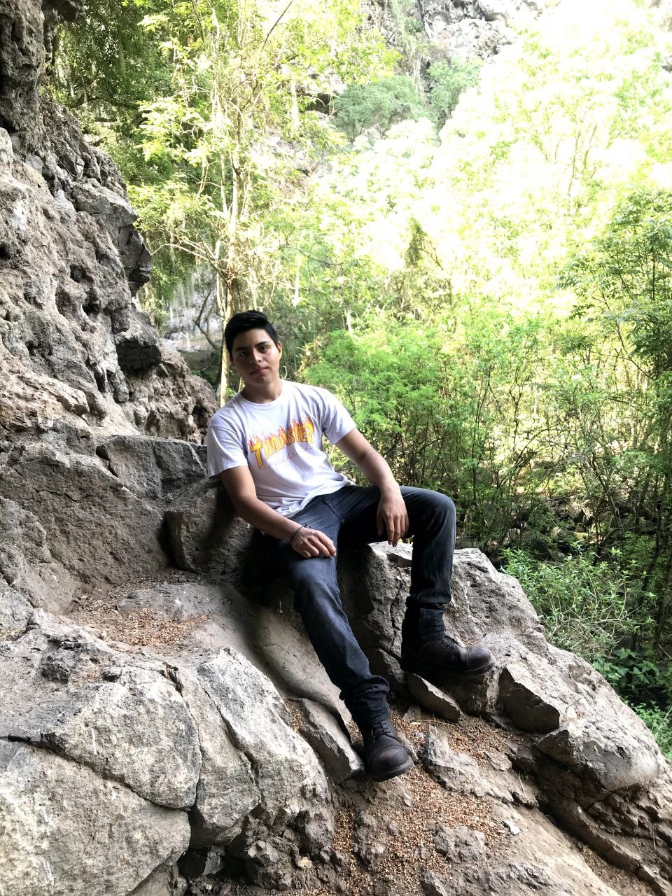

Sobre mí

Me gustan las computadoras desde que era un niño y me fascina programar, por esto decidí estudiar programación en la preparatoria y una vez finalizada escogí la carrera de Ingeniería en Sistemas Computacionales. Me gusta el senderismo, viajar en motocicleta y los videojuegos
Estudios:
1 Tecnológico de Jiquilpan
Estoy cursando el quinto semestre de la carrera de Ingeniería en Sistemas Computacionales
2 Cetis #121
Estudie la carrea de técnico en progrmación en el Cetis #121 de Sahuayo durante 2017 a 2020
3 Don Bosco
Curse la secundaria durante 2014 a 2017 en el colegio Don Bosco de Sahuayo
4 Miguel Hidalgo
Curse la primaria durante 2008 a 2014 en el colegio Miguel Hidalgo de Sahuayo
Experiencia Profesional
Protector-Técnico Verano 2022
Tecnico en instalación de camaras de seguridad, mantenimiento de camaras de seguridad, mantenimiento de equipo de cómputo, instalación y configuración de repetidores, instalación de antenas wifi, instalación de cercas electrificadas, instalación de gps a vehículos y mantenimiento de equipo de seguridad electrónica en general.